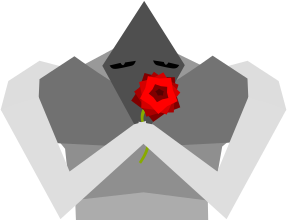

About Radish
Radish originally hales from the Southern Wilds (Wilderness near the southern borders of Eden) before he was employed by King Edmund of Edric as the bodyguard of his eldest son Prince Edward.
Characteristics of Radish
- He has messy yellow fur, four tendrils on his head, and a prehensile tail ending with a venomous green stinger.
- He wears a ragged brown skirt and white mask along with a purple collar gifted to him by King Edmund.
- He likes to draw on the mask to express how he's feeling.
- He doesn't speak.
- He is proficient in spear use.
Radish's Employers

Edmund The Slender; Arbiter of Fashion; Tamer of the Feral; Warden of the Chains; King of the Edric Empire by the grace of Ed; son of Edgar Woodmaster
Ruler of the Edric Empire and father of Prince Edward of Edric and Felix.

Prince Edward of Edric; Heir to the Edric Empire; son of Edmund the Slender
Heir to the throne and future ruler of the Edric Empire.

Felix the uncontrollable; son of Edmund
King Edmund of Edric; son of Edgar's other son. Earned that tittle at a very young age and continuously proves his worthiness.
Ezramari the patient; for Felix; son of Thyra Skullcrusher
Felix's bodyguard. Earned that tittle about [ageF] years back and continues to be tested of his worthiness everyday.